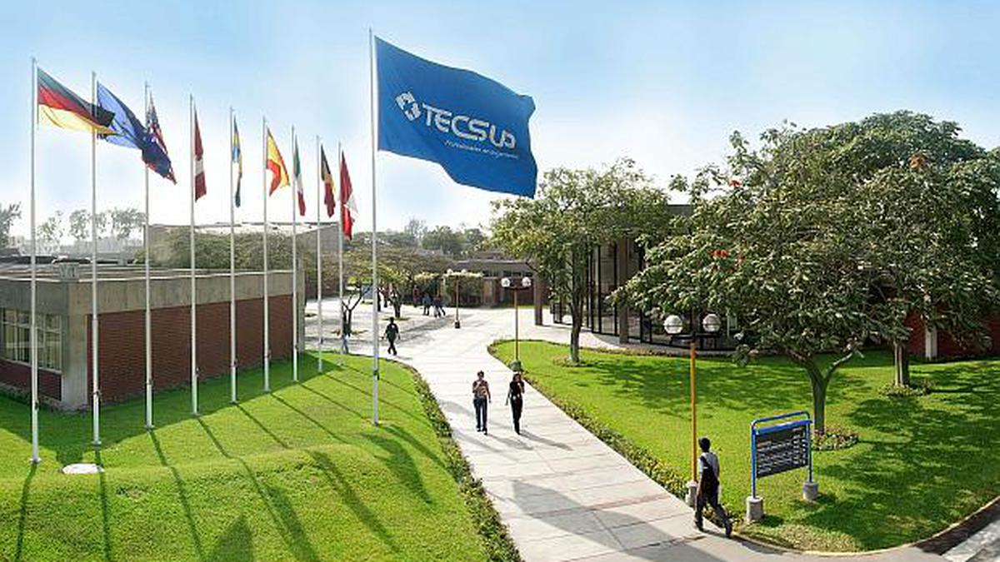

Carreras
Using a series of utilities, you can create this jumbotron, just like the one in previous versions of Bootstrap. Check out the examples below for how you can remix and restyle it to your liking.
Beneficios
Swap the background-color utility and add a `.text-*` color utility to mix up the jumbotron look. Then, mix and match with additional component themes and more.
Contactanos
Or, keep it light and add a border for some added definition to the boundaries of your content. Be sure to look under the hood at the source HTML here as we've adjusted the alignment and sizing of both column's content for equal-height.
Capacitaciones
Swap the background-color utility and add a `.text-*` color utility to mix up the jumbotron look. Then, mix and match with additional component themes and more.
Cursos
Or, keep it light and add a border for some added definition to the boundaries of your content. Be sure to look under the hood at the source HTML here as we've adjusted the alignment and sizing of both column's content for equal-height.
Infraestructura Lima
Swap the background-color utility and add a `.text-*` color utility to mix up the jumbotron look. Then, mix and match with additional component themes and more.
Nuestra historia
Tecsup fue creado en 1982 por Luis Hochschild Plaut como una asociación privada sin fines de lucro con el apoyo de un grupo de empresarios peruanos preocupados por el desarrollo nacional. En forma progresiva Tecsup ha ido implementando laboratorios e infraestructura principalmente gracias al aporte de empresas privadas nacionales., así como de donantes del exterior. Ha sido fundamental la ayuda del estado de Baden Württemberg de Alemania, a través del aporte de equipos, la capacitación de profesores y asesoría de expertos en el diseño de la organización y programas educativos. Asimismo, se recibió asistencia financiera y técnica del Banco Interamericano de Desarrollo, la Agencia Internacional para el Desarrollo de los Estados Unidos de América, la Unión Europa, Canadá, Suecia y el País Vasco de España. En 1984, Tecsup inició sus actividades educativas en un primer campus construido en la ciudad de Lima para ofrecer formación a través de Carreras Profesionales las cuales tienen como objetivo brindar una formación profesional integral. En 1993 se inició las operaciones en el campus de Arequipa, con el objetivo de contribuir a la descentralización del país. A esta segunda sede se sumó en el 2008 la sede de Trujillo para ofrecer carreras orientadas al sector económico de la región. Paralelamente a las actividades de formación Tecsup, creó los Programas de Extensión profesional, CPE – Cursos y Programas Integrales – y los PEP – Programas de Extensión para Profesionales. A la fecha Tecsup ofrece una variedad de productos y servicios a través de diferentes modalidades destacando Tecsup Virtual que fue ofertado en 1999 y a la fecha cuenta con más de 25,000 inscripciones. En cada campus se dio posteriormente los Programas de Extensión que ofrecen cursos cortos y programas de especialización e integrales. Tecsup ha ido introduciendo progresivamente una variedad de servicios educativos, como son los programas de capacitación de un año en áreas especializadas o los cursos dictados en la misma empresa y cursos por Internet.